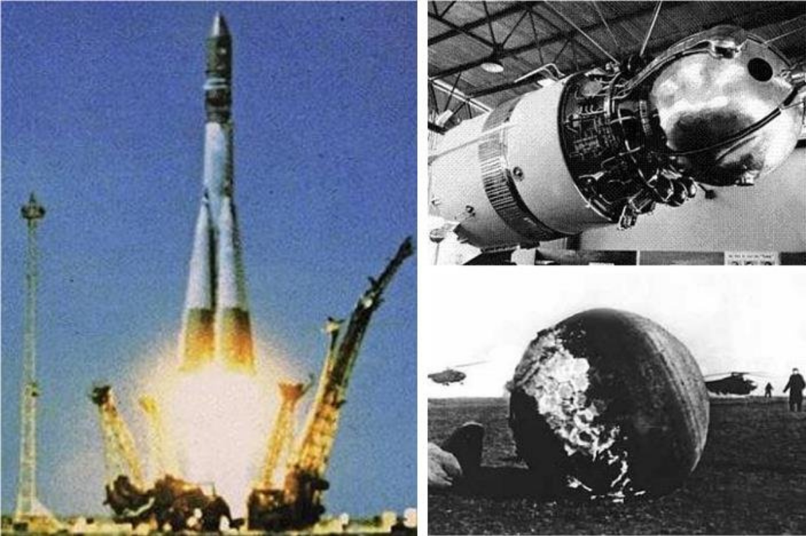
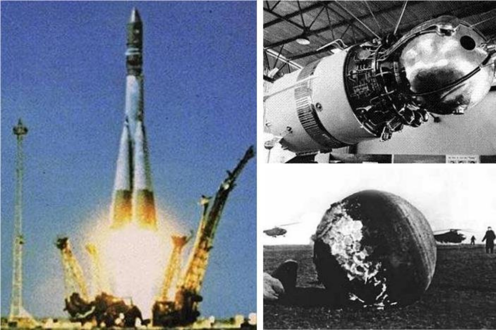

Witamy na stronie głównej!

Dowiesz się tutaj o początkach historii lotów kosmicznych, będziesz miał również możliwość spojrzeć na czasy współczesne.
Historia lotów kosmicznych |
||
Witamy na stronie głównej!

Dowiesz się tutaj o początkach historii lotów kosmicznych, będziesz miał również możliwość spojrzeć na czasy współczesne. |
||
|
© 2024 Konrad Zieliński - Historia lotów kosmicznych |
||